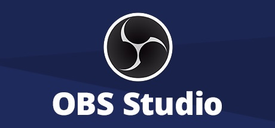
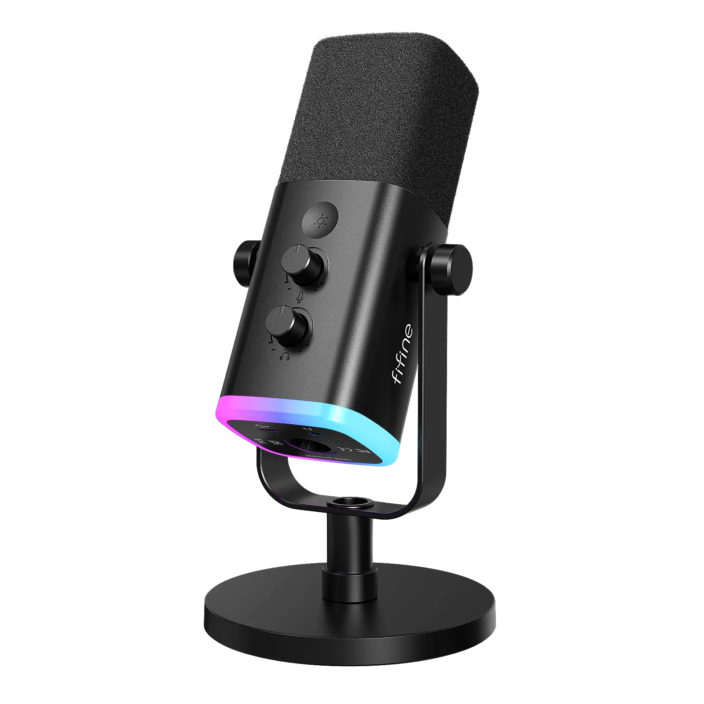
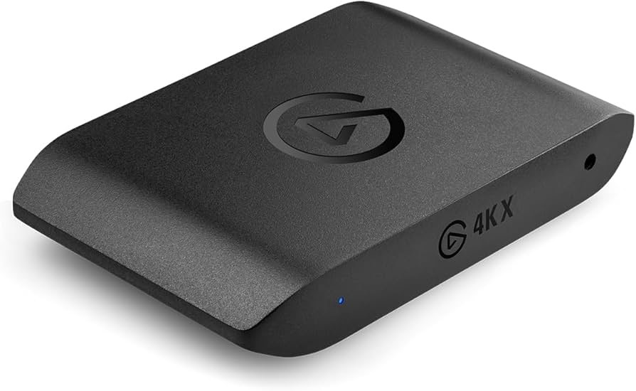

Recording Software
OBS Studio is used for gameplay recording, commentary capture, and managing creator content sessions.

OBS Studio is used for gameplay recording, commentary capture, and managing creator content sessions.

Adobe Premiere Pro is used to improve pacing, organize footage, and create cleaner gameplay videos.

A Fifine AM8 microphone paired with the Fifine SC3 audio mixer helps improve commentary clarity and overall audio quality.

An Elgato 4K X capture card is used to help record smoother high-quality gameplay footage for PC gaming content.
VidIQ is used to help improve thumbnails, understand performance trends, and experiment with content ideas.
The setup is organized around gaming, recording, editing, and improving the overall content workflow.